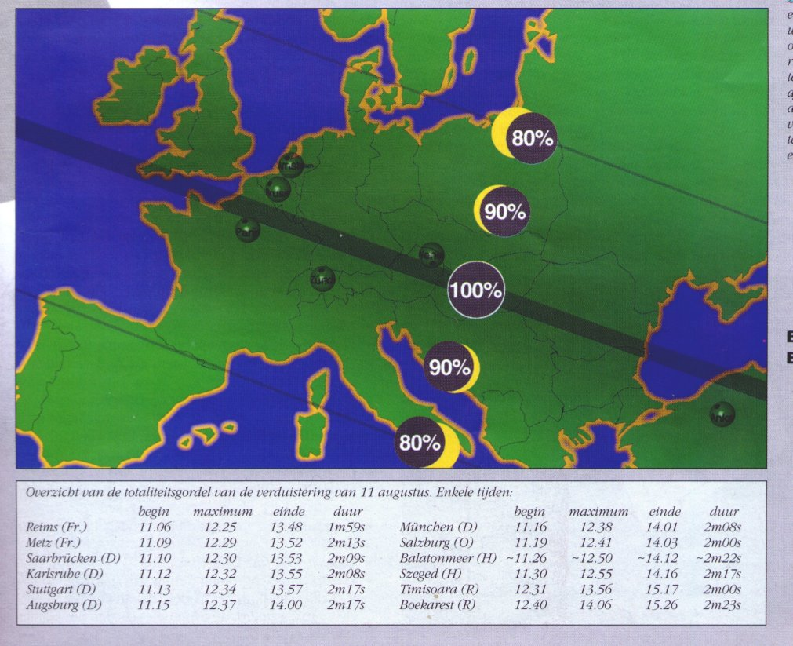

Eclips 11 augustus 1999; door Huub Briels, PE1MUL
=======================================
Ten tijde dat ik dit artikel op deze site upload is het ongeveer een jaar geleden dat we een eclips van de zon mochten meemaken in Europa. Zoals we nu weten was deze echter nauwelijks te zien... Daarom heb ik dit schrijven samengesteld om hier nog eens even op terug te komen.
Toen ik op onze verjaardag (begin augustus..heb een tweelingzus) een uitnodiging kreeg om mee te gaan voor het bezichtigen van een volledige eclips van de zon, heb ik me niet lang bedacht.
Op 10 augustus ben ik dan ook, samen met mijn jongste broer die het stuur mocht vasthouden, in de namiddag op weg gegaan richting Stuttgart om de te verwachten files te vermijden.
Naar later bleek hadden we hier heel goed aan gedaan.. Omdat natuurlijk de portofoon meeging (met een mobiel-antenne op de auto) konden we later vernemen dat het potdicht heeft gezeten op zo ongeveer alle toegangswegen..
Na enkele tussenstops kwamen we tegen 22:30u in Pforzheim, locatorvak JN48IV, waar we een slaapgelegenheid hebben gezocht. De volgende dag hebben we 's-morgens eerst een flinke ochtendwandeling door de omgeving gemaakt alvorens een geschikte plaats te zoeken voor het moment waar we allemaal zo lang op hadden gewacht. Onze zoektocht eindigde boven op een heuvel met een prachtig uitzicht op het gebied rondom. Met de porto op laag vermogen kon je van daaruit op 70cm nog verbinding maken met diverse repeaters in de omgeving.
Een daarvan die in Landau (Pfalz) , locatorvak JN68M?, staat kan ik me nog goed herinneren omdat deze een phone-baken heeft met een YL-stem. Voor diegene (zoals ik dus) die de CW-kunst nog niet beheersen een hele uitkomst..
Diverse verbindingen werden gemaakt op zowel 2m als 70cm, zoals verwacht gingen de meeste QSO's over de aankomende eclips en wat er zoal te zien was. (Mijn broer heeft me regelmatig uitgelachen omdat mijn Duits nu eenmaal niet zo goed is als dat van bijvoorbeeld PA0EVO..) Toen het moment van de eclips eenmaal aanbrak bleken we niet de enigste te zijn die tegen een steeds dichter wolkendek aan mochten kijken, stilletjes hopend op een opening ! Soms konden we een glimp opvangen van de maan die voor de zon schoof, en ook vele kijkers bij ons in de buurt zaten gespannen met camera's en eclipsbrilletjes te wachten.
Vanwege eerder genoemde opstopping op de wegen konden we ons echter ook niet meer veroorloven om ergens anders een betere plek te vinden. Eerlijk gezegd heb ik weinig gemerkt van propagatie-verschijnselen voor en na de eclips, maar voor het overige bleek het toch een indrukwekkende ervaring te zijn. We bevonden ons praktisch in het midden van de totaliteits- zone, dus het werd eventjes heel donker en daarna met vogels die weer opnieuw begonnen te fluiten snel weer licht.
Vervolgens zijn we dan maar weer huiswaarts getogen alwaar we 's avonds na een voor- spoedige reis en de nodige tussenstops zijn aangekomen. Om jullie toch enige data voor te kunnen schotelen heb ik een bericht gevonden van een mede-amateur dat verderop wordt weergegeven. De vertaling laat ik aan jullie over. Moet toch wel lukken dacht ik zo..
Eerst nog even een bijdrage uit: ARRL Ltr Vol 18; over de propagatie tijdens de eclips, gevonden op de www.VERON.nl.-site..
Op woensdag 11 augustus gebeurde voor een paar uurtjes het onmogelijke; de 160-meter was open in de zomertijd, daglicht-DX! Dit werd mogelijk gemaakt door de totale, of bijna totale, zonsverduistering. Deze eclips was de laatste totale van de 20-ste eeuw. De tocht van de maanschaduw trok dwars over Midden-Europa, Turkije, het Midden-Oosten, Pakistan en India. Wetenschappers hadden al ge-theoretiseerd dat de afwezigheid van het zonlicht de D-laag in onze ionosfeer zou be‹nvloeden. NASA had zend- en luisteramateurs opgeroepen om de kortegolf-signalen vanuit Europa voor, tijdens en na de eclips in de gaten te houden, en hun bevindingen te rapporteren...
IV3PRK, Luis, meldde dat in zijn QTH (in JN66NE) om 09:19 UTC de eclips begon; vervolgens om 10:42 UTC de 96 procent van de eclips bereikte, en om 12:06 UTC voorbij was. Hij werkte in deze periode meer dan 24 stations in 13 landen tussen de 10:12 en 11:30 UTC; o.a. met Duitsland, Engeland, Frankrijk, Roemenie en Turkije.
De QSO's volgden ongeveer het pad van de maanschaduw.. Zijn grootste gewerkte afstand was een verbinding met GM3POI, ongeveer 1740 km. Luis meldde dat na de eclips de typische 160-meter zomerruis weer terugkwam.
NASA maakte bekend dat er een speciale uitzending door de BBC World Service op 7325 Kc was richting U.S.A. om de propagatie-conditie's gedurende de eclips te testen. Een afwijking, veroorzaakt door de eclips, van de uitzending werd op 11 augustus waargenomen.
De dag ervoor was het BBC-signaal vanuit Rampisham, Engeland, niet waar te nemen op het Marshall Space Flight Center in Alabama wegens D-laag absorbtie boven Engeland en de Atlantische Oceaan. Het radiosignaal kwam echter duidelijk door tijdens de passage van de maanschaduw over de Atlantische Oceaan!
En dan nu het bericht dat ik eerder vermeld had:
-------------------------------------------
Datum/tijd : 18-Aug 09:17 gmt 1999
From: I8CVS@IW8DPW.ICAM.ITA.EU
To : AMSAT@WW
A report on ECLIPSE SUN-NOISE from QTH locator JN70ES
Lat 40ø.7694 North
Long 14ø.3861 East
This report deals with measurement of sun-noise made during the sun-eclipse on 11-08-1999.
The sun-noise S+N/N ratio has been measured at 2400 Mhz, the 13 cm satellite band, and on 10451 Mhz,
the 3 cm satellite band using equipments already made for the next amateur satellite PHASE-3D.
ECLIPSE FROM NAPLES IN UTC TIME
| BEGINNING |
MAXIMUM DARKENING (82%) |
END |
| 09:23 |
10:43 |
12:12 |
Working conditions at 2400 MHz:
1,2 meters parabolic disc; G=27 dBi; F/D=0,45; feed RHCP polarized
Overall equivalent noise temperature of the receiving system: Te=72 kelvin,
i.e. NF=0,96 dB Equivalent antenna temperature when aimed at the cold-sky: Ta=20 kelvin
Receiver bandwidth : BW=2400 Hz.
The solar flux in sfu released by the NOAA Space Environment Center station in San Vito (Italy) for 1415 and 2695 MHz at 11:00 UTC,
on day august 11/1999 has been interpolated at 2400 MHz by computer program and used for calculations in aid to radio measurements
during the eclipse using the above mentioned equipments.
1415 MHz = 102 sfu
2695 MHz = 124 sfu
Units: 1 sfu (Solar Flux Unit) = 10^-22 W/m^2/Hz
------------- 2400 MHz MEASURED DATA -------------
| UTC |
NOISE LEVEL IN S+N/N RATIO |
COMMENT |
| 08:50 |
5,8 / 6,0 dB |
Before beginning of the eclipse |
| 09:32 |
4,4 / 5,0 dB |
9 minuts after beginning |
| 09:55 |
3,6 / 4,0 dB |
|
| 10:13 |
3,6 dB |
at about 1/2 darkening |
| 10:44 |
2,0 dB |
at max darkening 82% |
| 13:00 |
5,0 / 5,5 dB |
48 minuts after the eclipse end |
-----------------------------------------------------------------------------
Working conditions at 10451 MHz:
60 cm parabolic disc; G=33 dBi; F/D=0,38; feed RHCP polarized.
Overall equivalent noise temperature of the receiving system:Te=101 kelvin, i.e. NF=1,3 dB Equivalent antenna temperature when aimed at the cold-sky Ta < 5 kelvin
Solar flux in sfu released by the NOAA Space Environment Center station in San Vito (Italy) at 11:00 UTC day august 11 1999.
Receiver bandwidth:BW=2400 Hz.
The values of sfu are for the following frequencies:
8800 MHz =261 sfu
15400 MHz =521 sfu
------------ 10451 MHz MEASURED DATA ------------
| UTC |
NOISE LEVEL IN S+N/N RATIO |
COMMENT |
| 08:55 |
3,8 / 4,0 dB |
Before beginning of the eclipse |
| 09:35 |
3,1 / 3,2 dB |
12 minutes after beginning |
| 09:55 |
2,4 / 3,0 dB |
|
| 10:18 |
2,3 / 2,8 dB |
at about 1/2 darkening |
| 10:47 |
1 dB |
at max darkening 82 % |
| 13:05 |
4,0 / 6,0 dB |
53 minutes after the end of the eclipse. |
Noise increases to 6 dB for few seconds during some flares.
---------------------------------------------------------------
In conclusion:
The possibility of variations in solar flux during the eclipse test cannot be ruled completely out,
but radio amateurs are in condition to use very well equipped EME and satellite stations to deeply investigate and compare their measurements
with that released by the official sources, and compare both results in order to made useful evaluations.
The following Solar Radio Data related to the above measurements are those released by NOAA on Aug 11 1999 and they can be used for your evaluations.
For daily Solar Radio Data information, please contact:
gopher://proton.sel.noaa.gov:70/11/lists/radio
---------------------------
:Product: Solar Radio Data rad.txt
:Issued: 0332 UT 12 Aug 1999
#
# Prepared by the U.S. Dept. of Commerce, NOAA, Space Environment Center.
# Please send comments and suggestions to sec@sec.noaa.gov
# Units: 10^-22 W/m^2/Hz
# Missing Data: -1
#
# Daily local noon solar radio flux values - Updated once an hour
1999 Aug 11
| Freq |
Learmonth |
San Vito |
Sag Hill |
Penticton |
Penticton |
Palehua |
Penticton |
| Mhz |
0400 UT |
1100 UT |
1600 UT |
1700 UT |
2000 UT |
2200 UT |
2300 UT |
| 245 |
50 |
18 |
16 |
-1 |
-1 |
19 |
-1 |
| 410 |
114 |
38 |
43 |
-1 |
-1 |
44 |
-1 |
| 610 |
75 |
109 |
62 |
-1 |
-1 |
65 |
-1 |
| 1415 |
105 |
102 |
102 |
-1 |
-1 |
111 |
-1 |
| 2695 |
125 |
124 |
124 |
-1 |
-1 |
133 |
-1 |
| 2800 |
-1 |
-1 |
-1 |
127 |
128 |
-1 |
130 |
| 4995 |
166 |
147 |
175 |
-1 |
-1 |
166 |
-1 |
| 8800 |
259 |
261 |
209 |
-1 |
-1 |
265 |
-1 |
| 15400 |
510 |
521 |
518 |
-1 |
-1 |
429 |
-1 |
---------------------------------
73 de I8CVS Domenico
Met vriendelijke dank aan Domenico voor het opsturen van zijn bevindingen..
Op onderstaande afbeelding is het pad van de maanschaduw,
door o.a. Europa, tijdens de eclips goed te zien. Het is ingescand uit een artikel in ZENIT,
uitgave juli/augustus 1999.

Naar Index Pagina